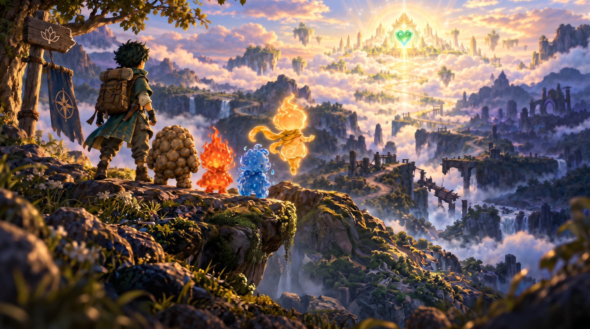

มีเรื่องเล่าว่ามีผู้กล้าคนหนึ่งกับเพื่อนร่วมทาง 4 คน
stress fear blues และ Light
คณะเดินทางนี้ต้องเดินทางเพื่อไปสู่ดินแดนแห่งความสุข หรือ happy land
เพื่อตามหาหัวใจแห่งความสุข หรือ happy heart
แต่ระหว่างทางผู้กล้ากับเพื่อนทั้ง 4 คนกลับต้องเผชิญกับบททดสอบและอุปสรรคมากมาย
ผู้กล้าจะตามหาหัวใจแห่งความสุข
และปกป้องเพื่อนทั้ง 4 ได้หรือไม่
มีเพียงคุณเท่านั้นที่เป็นผู้ตัดสิน